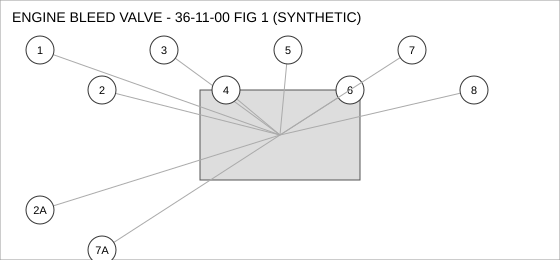
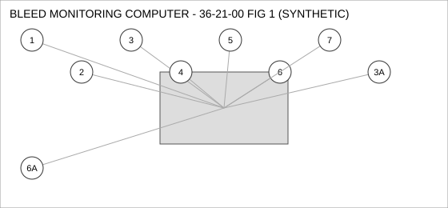
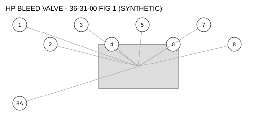

Document type: IPC | Revision: 15 | Fleet: A320
| CODE | AIRCRAFT |
|---|---|
| A | A320ceo |
| B | A320neo |
| C | A321neo |

| FIG ITEM | PART NUMBER | NOMENCLATURE | EFFECT | UPA |
|---|---|---|---|---|
| 1 | D24229860200 | COUPLING - QUICK DISCONNECT, ENGINE BLEED VALVE | B C | 1 |
| 2 | D21375792700 | FILTER ELEMENT, ENGINE BLEED VALVE | C | 1 |
| SUPERSEDED BY D26530507700 | ||||
| 2A | D26530507700 | FILTER ELEMENT, ENGINE BLEED VALVE | C | 1 |
| SUPERSEDES D21375792700. D21375792700 IS NOT INTERCHANGEABLE WITH THIS PART (ONE-WAY). | ||||
| 3 | D21291444600 | ACTUATOR - LINEAR, ENGINE BLEED VALVE | ALL | 1 |
| 4 | D22682149800 | NUT - SELF-LOCKING, ENGINE BLEED VALVE | B C | 4 |
| 5 | D20502908400 | PUMP - TRANSFER, ENGINE BLEED VALVE | ALL | 1 |
| 6 | D20505788800 | SEAL - FLANGE, ENGINE BLEED VALVE | A B | 1 |
| 7 | D21295987000 | SEAL - O-RING, ENGINE BLEED VALVE | ALL | 1 |
| 7A | D25219172500 | SEAL - O-RING, ENGINE BLEED VALVE | ALL | 1 |
| INTERCHANGEABLE WITH D21295987000 WHEN SB 36-2217 IS EMBODIED. | ||||
| 8 | D22154778800 | BOLT, ENGINE BLEED VALVE | C | 1 |

| FIG ITEM | PART NUMBER | NOMENCLATURE | EFFECT | UPA |
|---|---|---|---|---|
| 1 | D25040124200 | PUMP - TRANSFER, BLEED MONITORING COMPUTER | C | 1 |
| 2 | D20933261400 | CONNECTOR - ELECTRICAL, BLEED MONITORING COMPUTER | ALL | 4 |
| 3 | D29955661100 | DUCT - FLEXIBLE, BLEED MONITORING COMPUTER | ALL | 4 |
| 3A | D26786362100 | DUCT - FLEXIBLE, BLEED MONITORING COMPUTER | ALL | 4 |
| INTERCHANGEABLE WITH D29955661100 (TWO-WAY). | ||||
| 4 | D21062103200 | SEAL - O-RING, BLEED MONITORING COMPUTER | C | 1 |
| 5 | D23104013300 | VALVE - SHUTOFF, BLEED MONITORING COMPUTER | A | 2 |
| 6 | D21831880500 | NUT - SELF-LOCKING, BLEED MONITORING COMPUTER | ALL | 1 |
| 6A | D23907224300 | NUT - SELF-LOCKING, BLEED MONITORING COMPUTER | ALL | 1 |
| INTERCHANGEABLE WITH D21831880500 WHEN SB 36-1042 IS EMBODIED. | ||||
| 7 | D23278975400 | SEAL - FLANGE, BLEED MONITORING COMPUTER | A B | 1 |

| FIG ITEM | PART NUMBER | NOMENCLATURE | EFFECT | UPA |
|---|---|---|---|---|
| 1 | D29882482000 | BRACKET - MOUNTING, HP BLEED VALVE | C | 1 |
| 2 | D25061217200 | SWITCH - PRESSURE, HP BLEED VALVE | B C | 2 |
| 3 | D28170124500 | NUT - SELF-LOCKING, HP BLEED VALVE | C | 4 |
| 4 | D29226949300 | CONNECTOR - ELECTRICAL, HP BLEED VALVE | B C | 1 |
| 5 | D21184235200 | SEAL - O-RING, HP BLEED VALVE | B C | 2 |
| 6 | D26867894000 | SENSOR - PRESSURE, HP BLEED VALVE | ALL | 1 |
| 7 | D25503119800 | FILTER ELEMENT, HP BLEED VALVE | B C | 4 |
| 8 | D27023824300 | PUMP - TRANSFER, HP BLEED VALVE | ALL | 4 |
| 8A | D20572160100 | PUMP - TRANSFER, HP BLEED VALVE | B C | 4 |
| ALTERNATE FOR D27023824300 ON A320NEO, A321NEO ONLY. | ||||